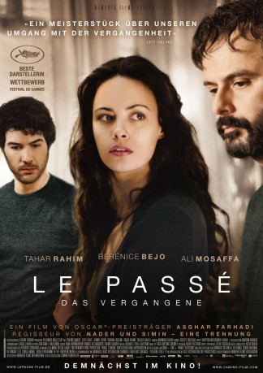
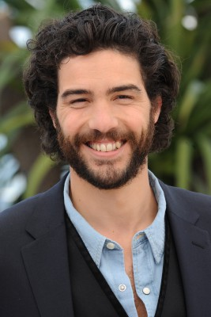

#3505 Le passé - Das Vergangene
 
 IMDB-Wertung: 7.9 / 10
IMDB-Wertung: 7.9 / 10  Metascore: 0
Metascore: 0 
Der Film erzählt die Geschichte eines geschiedenen Ehepaars, dass sich einige Jahre nachdem der Entschluss dazu gefallen und der Mann ins Ausland gezogen ist, scheiden lassen möchte. Doch als er wieder etwas Zeit mit seiner ehemaligen Familie verbringt, offenbart sich ihm ein weitreichender Konflikt, der zur Zeit seiner Abwesenheit zwischen Mutter und Tochter entbrannt ist.
Jahr: 2013
Dauer: 130 Minuten
FSK: 12
Land: Frankreich Studio: Arthaus FilmverleihTonspuren:
Untertitel: Deutsch,
Auflösung: 1080p (1920x1040) Größe: 10055 MB
Genre: Drama, Mystery
Regisseur: Asghar Farhadi
Drehbuch: Adam Brooks
Soundtrack:
Darsteller:
 Bérénice Bejo als Marie Brisson
Bérénice Bejo als Marie Brisson- Ali Mosaffa als Ahmad
-  Tahar Rahim als Samir
- Pauline Burlet als Lucie
- Elyes Aguis als Fouad
 Sabrina Ouazani als Naïma
Sabrina Ouazani als Naïma- Babak Karimi als Shahryar
- Jeanne Jestin als Léa
 Valéria Cavalli als Valeria
Valéria Cavalli als Valeria- Aleksandra Klebanska als Céline
- Jean-Michel Simonet als Médecin
- Pierre Guerder als Juge
- Anne-Marion de Cayeux als Avocate
- Eléonora Marino als Collègue Marie
- Jonathan Devred als Agent aéroport
- Sylviane Fraval als Infirmière
 Yvonne Gradelet als Une cliente de la brasserie , uncredited
Yvonne Gradelet als Une cliente de la brasserie , uncredited- Michèle Raingeval als Une cliente de la brasserie , uncredited
Datei: X:\2013(I-M)\Le passé - Das Vergangene (2013, FSK12, 1920x1040).mkv seit 19.04.2016
Festplatte: HD 2013(I-Z)-2014(A-Z)
 Es gibt insgesamt 89 Filme in der Gruppe '2013(I-M)'
Es gibt insgesamt 89 Filme in der Gruppe '2013(I-M)'